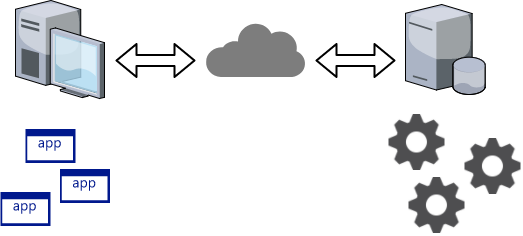

Projekt i implementacja systemów webowych
Plan zajęć
- Architektura aplikacji webowej. Języki HTML5 i CSS3.
- Wprowadzenie do języków JavaScript oraz TypeScript.
- Architektura, backend i Spring.
- Techniki utrwalania danych, ORM.
- Wprowadzenie do frameworku Angular.
- Programowanie asynchroniczne i reaktywne.
- Cloud computing.
- Testowanie
Zasady zaliczeń
Podstawą zaliczenia wykładu jest kolokwium:
- Pierwszy termin: 2021-04-19 (wykład 7)
- Drugi termin: 2021-04-26 (wykład 8)
Zasady zaliczenia zajęć laboratoryjnych omówione będą na pierwszych zajęciach laboratoryjnych.
UWAGA: w przypadku zdalnej formy prowadzenia zajęć zmieniona będzie formuła zaliczeń:
- W przypadku uzyskania przez studenta/studentkę oceny minimum 4,0 z laboratorium, z wykładu przepisana zostanie ta ocena pomniejszona o 1.
- Dla studentów/studentek chcących uzyskać lepszą ocenę zorganizowane zostanie kolokwium w formie ustnej.
Konsultacje
- mgr inż. Szymon Jaśniak
- mgr inż. Maciej Małecki
- mgr inż. Marcin Nowak
Materiały
Strona z informacjami na temat kursu:
https://pwr-piisw.github.io/materialy/Kurs ma własną organizację na GitHubie:
https://github.com/pwr-piiswSlajdy z wykładów dostępne są on-line:
https://pwr-piisw.github.io/materialy/#_harmonogramAplikacje webowe
Źródło: https://www.pinterest.com/buccus3/women-and-retro-computers/
Architektura klient-serwer
Architektura klient-serwer
- Aplikacje klienckie są instalowane niezależnie na maszynach klienckich.
- Aktualizacja kodu serwera z reguły pociąga za sobą konieczność aktualizacji kodu klienta.
- Istniały mechanizmy pozwalające na "obejście" tego problemu, jak np. Java Applets, Java Web Start, Flash/ActionScript, wymagały one jednak instalacji dodatkowego oprogramowania (JVM, Pluginy).
Aplikacja webowa
Historia aplikacji webowych


W praktyce struktura adresu strony odzwierciedlała położenie pliku na serwerze.
Statyczna zawartość nie zawsze wystarczy...

- od ok. roku 1993: pierwsze skrypty generujące dynamiczne dokumenty HTML
- CGI
- PHP (1995)
- ASP (1996)
- Java Servlets (1997)
- JSP (1999)
- wczesne lata 2000: technologie komponentowe: JSF, ASP.NET
Klasyczna aplikacja webowa
 →
→
AJAX

- ok 2005 roku: AJAX - Asynchronous JavaScript and XML
- żądania HTTP "w tle"
- modyfikacja zawartości strony bez przeładowywania
AJAX - przykład
A gdyby tak każda aplikacja webowa składała się z jednego dokumentu HTML,
a komunikacja z serwerem odbywała się wyłącznie z użyciem podejścia AJAX?
Architektura aplikacji SPA*

* architektura typowa dla Angular
Odpowiedzialności
Klient (przeglądarka WWW)
- Prezentacja danych otrzymanych z serwera.
- Obsługa żądań użytkownika.
- Wysyłanie danych na serwer.
- Warunkowe wyświetlanie elementów HTML.
Serwer (Java, ...)
- Zapis danych.
- Wczytywanie danych.
- Komunikacja z innymi systemami.
- ...
Języki HTML i CSS
HTML
HTML to język bazujący na znacznikach służący to tworzenia stron sieci Web.
Przykład dokumentu HTML:
Struktura dokumentu HTML
- Dokument HTML składa się ze elementów oraz z tekstu.
- Każdy element zbudowany jest ze znaczników (ang. tags), w szczególności ze znacznika otwierającego i zamykającego.
- Struktura znaczników musi tworzyć drzewo.
- W szczególnych przypadkach znacznik zamykający może być pominięty (
<img>,<br>,<hr>, itp).
Atrybuty elementów HTML
- Atrybuty dostarczają dodatkowej informacji dla elementu.
- Atrybuty muszą być umieszczone w znaczniku otwierającym.
Elementy semantyczne HTML
CSS
- Umożliwia opis formy prezentacji dokumentu
HTML. - Aspekty prezentacyjne są odseparowane od treści dokumentu.
- Bardzo duże możliwości formatowania i pozycjonowania treści.
CSS3: eliminacja konieczności używaniaJavaScriptdo bardziej zaawansowanych efektów wizualnych.
CSS: Stylowanie dokumentu
https://plnkr.co/plunk/nmkzZZPjBUWvdukf
header {
font-size: large;
font-weight: bold;
font-family: courier;
text-align: center;
background-color: lightgreen;
}
h1 {
font-family: tahoma;
font-style: italic;
}
p {
text-align: justify;
}
footer {
text-align: right;
color: darkblue;
font-weight: bold;
}
Block vs inline
https://plnkr.co/plunk/EHLtbvjZ4XRHKfNT
.bordered {
border-style: solid;
border-color: black;
border-width: 1px;
}
Selektory CSS
https://plnkr.co/plunk/tkCQWT7XuKwThdcl
article p {
font-family: Arial;
}
article#first p {
font-size: small;
}
p.citation {
font-size: xx-small;
margin-left: 30px;
}
Przykłady
.intro- wszystkie elementy o klasieintro.#firstname- element o identyfikatorzefirstname.p- wszystkie elementy typup(paragraf).p,div- wszystkie elementy typuporazdiv.div p- wszystkie elementypzawarte w elemenciediv(nie koniecznie bezpośrednio).div>p- wszystkie elementypzawarte bezpośrednio w elemenciediv.
Więcej na: www.w3schools.com/cssref/
Model pudełkowy
Model pudełkowy
https://plnkr.co/plunk/F6CU2ecYzwJdy4ou
p {
padding: 10px 15px 20px 25px;
border-width: 7px 5px 3px 1px;
border-style: solid;
border-color: navy;
border-radius: 5px 10px 20px 30px;
background-color: #f0f0f0;
margin: 10px 20px
}
span {
border-width: 2px;
border-style: dotted;
border-color: brown;
}
Zarządzanie układem dokumentu HTML
div {
padding: 20px;
}
div#first {
background-color: yellow;
}
div#second {
background-color: green;
}
/*
div.col {
width: 40%;
}
*/
/*
div.left {
float: left;
}
*/
/*
div.right {
float: right
}
*/
<div id="first">
Foo
</div>
<div id="second">
Bar
</div>